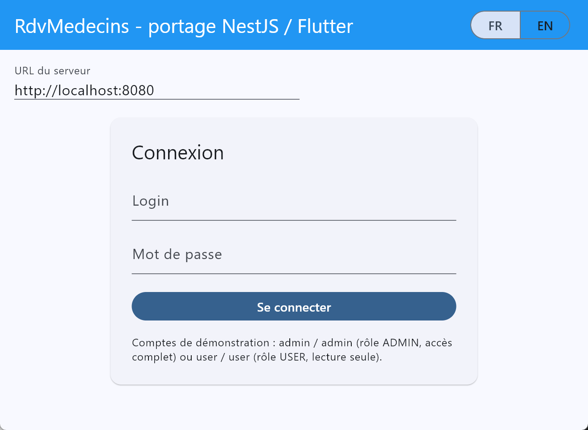
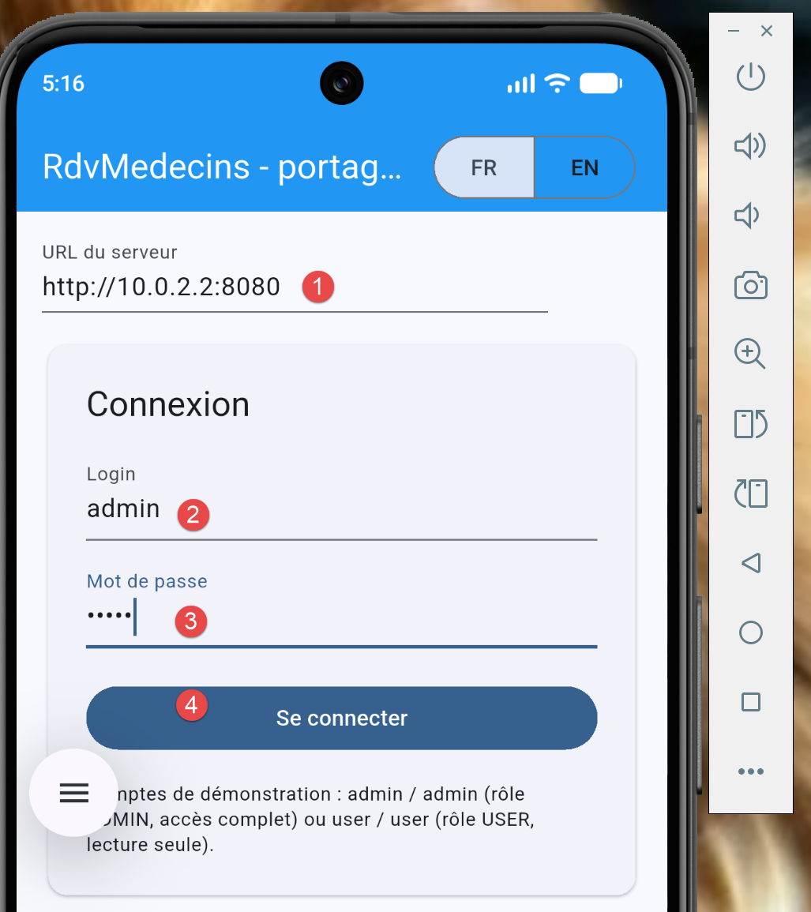
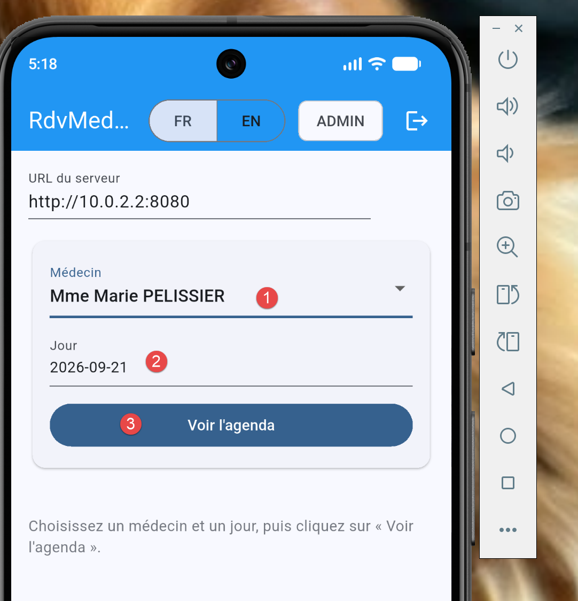

6. Chapitre 5 - Porter l'application Flutter vers mobile, bureau et web
6.1. Un seul code source, plusieurs cibles de compilation
C'est le cœur de ce chapitre, et la raison d'être de cette variante du cours : AUCUNE ligne du chapitre 4 ([lib/], [pubspec.yaml], [assets/]) ne change, quelle que soit la cible retenue. « Porter » l'application ne consiste, ici, qu'à choisir une COMMANDE DE COMPILATION différente ([flutter run -d <cible>] ou [flutter build <cible>]) - jamais à écrire, dupliquer ou adapter le moindre widget. C'est très différent de ce qu'un portage aurait demandé avec les outils employés dans le reste de ce cours : un client [Vue.js]/[React]/[Angular] ne s'exécute NATIVEMENT que dans un navigateur - le porter vers mobile suppose un outil TIERS ([Cordova]/[Capacitor], non utilisés dans ce cours) qui l'empaquette dans une coquille native contenant, en réalité, un navigateur embarqué (une [WebView]) : le code reste inchangé, mais ce n'est TOUJOURS PAS un exécutable natif, contrairement à ce que [Flutter] produit ici pour le mobile et le bureau (cf. chapitre 3, « Ce que Flutter N'EST PAS »).
Les six cibles ([Android], [iOS], [macOS], [Windows], [Linux], [web]) sont activées PAR DÉFAUT dans tout projet créé avec [flutter create] depuis [Flutter 3] (cf. chapitre 1) - rien à configurer côté projet pour en ajouter une. Seuls changent, d'une cible à l'autre : les outils de compilation natifs installés sur la machine de développement ([Xcode], [Visual Studio], [GTK]...), la commande exacte lancée, et - pour le mobile uniquement - un détail de configuration réseau détaillé plus loin dans ce chapitre.
6.2. Cible web
La cible déjà utilisée au chapitre 2 ([flutter run -d chrome]). Deux commandes suffisent :
[flutter build web] produit un dossier [build/web/] autonome ([index.html], [JavaScript] ou [WebAssembly] compilé, ressources) - à déployer sur N'IMPORTE QUEL serveur web statique ([Nginx], [Apache], un simple [npx serve]...), exactement comme le [dist/] produit par [npm run build] côté [Vue.js]/[Vite]. Ce build reste un fichier [JavaScript] servi par un navigateur : il continue donc de dépendre d'un serveur [NestJS] JOIGNABLE depuis ce navigateur, et donc de [app.enableCors()] (cf. [src/main.ts] du serveur) - déjà actif, sans rien à changer côté serveur pour cette cible.
Un point d'attention propre à cette cible : le champ « URL du serveur » de l'écran de connexion (cf. [_ServerUrlField] dans [lib/app.dart], chapitre 4) doit alors pointer vers une adresse ATTEIGNABLE depuis le navigateur qui exécute l'application - [http://localhost:8080] convient tant que le serveur [NestJS] tourne sur la MÊME machine que le navigateur.
6.3. Cible bureau
Trois systèmes d'exploitation, trois jeux d'outils natifs préalables (cf. chapitre 1), mais des commandes [flutter] identiques dans leur forme :
Chaque commande [flutter build <cible>] produit un exécutable natif AUTONOME ([.app] sur macOS, [.exe] + ses bibliothèques sur Windows, un binaire [ELF] sur Linux), dans [build/<cible>/] - un exécutable qui, contrairement au build web, ne s'exécute dans AUCUN navigateur, sur AUCUNE [WebView] : c'est du code natif tournant directement sur le système d'exploitation, avec sa propre fenêtre, sa propre barre de titre, gérées par [Flutter] lui-même.
Cette cible n'a besoin d'AUCUN réglage réseau particulier : une application de bureau tourne sur la même machine que l'utilisateur et atteint [http://localhost:8080] exactement comme le ferait n'importe quel autre programme installé sur cette machine (le champ « URL du serveur » de l'écran de connexion permet, comme pour les autres cibles, de pointer vers un serveur distant si besoin).
PS C:\Data\st-2026\dev\flutter-nestjs-sept-2026\rdvmedecins_flutter_client> flutter devices
Found 4 connected devices:
sdk gphone16k x86 64 (mobile) • emulator-5554 • android-x64 • Android 17 (API 37) (emulator)
Windows (desktop) • windows • windows-x64 • Microsoft Windows [version
10.0.26200.9457]
Chrome (web) • chrome • web-javascript • Google Chrome 153.0.8010.48
Edge (web) • edge • web-javascript • Microsoft Edge 153.0.4234.48
Run "flutter emulators" to list and start any available device emulators.
If you expected another device to be detected, please run "flutter doctor" to diagnose potential issues. You
may also try increasing the time to wait for connected devices with the "--device-timeout" flag. Visit
https://flutter.dev/setup/ for troubleshooting tips.
PS C:\Data\st-2026\dev\flutter-nestjs-sept-2026\rdvmedecins_flutter_client> flutter run -d windows
Cela produit le résultat suivant :

L’écran ci-dessus ne provient pas d’un navigateur mais d’une application windows. Pour que cela marche, il faut que certains outils soient disponibles :
- ligne 2, il faut que Visual Studio soit installé ;
Pour avoir une bonne vue de ce qui manque à votre projet Flutter, tapez la commande :
6.4. Cible émulateurs
L’application Flutter a été testée sur un émulateur Android :
PS C:\Data\st-2026\dev\flutter-nestjs-sept-2026\rdvmedecins_flutter_client> flutter devices
Found 4 connected devices:
sdk gphone16k x86 64 (mobile) • emulator-5554 • android-x64 • Android 17 (API 37) (emulator)
Windows (desktop) • windows • windows-x64 • Microsoft Windows [version
10.0.26200.9457]
Chrome (web) • chrome • web-javascript • Google Chrome 153.0.8010.48
Edge (web) • edge • web-javascript • Microsoft Edge 153.0.4234.48
...
PS C:\Data\st-2026\dev\flutter-nestjs-sept-2026\rdvmedecins_flutter_client> flutter run -d emulator-554
Le résultat dans l’émulateur :

- attention à l’URL en [1] ;
La connexion de admin / admin donne le résultat suivant :

Renseignez le formulaire puis validez :

On voit ci-dessus le créneau que nous avons réservé avec l’application web.
6.5. Cible mobile
Note : le réviseur n’a pas testé cette section.
La cible qui demande le plus d'attention, à cause d'un détail propre au réseau des émulateurs/simulateurs.
6.5.1. Le piège réseau propre au mobile : localhost ne désigne plus le PC de développement
C'est LE détail à connaître pour cette cible, sans rapport avec [Flutter] lui-même : [localhost] (ou [127.0.0.1]), dans le champ « URL du serveur » de l'écran de connexion, désigne TOUJOURS la machine qui exécute le code - or un émulateur/simulateur mobile est une machine VIRTUELLE DISTINCTE de la machine de développement où tourne le serveur [NestJS], même si les deux semblent « être sur le même ordinateur ».
- Émulateur [Android] (créé par [Android Studio]) : utiliser [http://10.0.2.2:8080] — une adresse spéciale, propre à l'émulateur [Android] officiel, qui redirige automatiquement vers [localhost] de la machine hôte (le PC de développement).
- Simulateur [iOS] (macOS uniquement) : [http://localhost:8080] fonctionne directement, le simulateur [iOS] partageant le réseau de la machine hôte (contrairement à l'émulateur [Android]).
- Appareil physique ([Android] ou [iOS], connecté au même réseau Wi-Fi que le PC de développement) : utiliser l'adresse [IP] LOCALE de ce PC sur ce réseau (par exemple [http://192.168.1.42:8080]), jamais [localhost] ni [10.0.2.2], qui désignent l'un et l'autre l'appareil mobile lui-même dans ce cas.
6.5.2. Deux restrictions supplémentaires, propres au mobile
- [Android] (depuis l'API 28) bloque par défaut tout trafic [HTTP] EN CLAIR (non chiffré [https://]) — puisque le serveur [NestJS] de ce cours écoute en [HTTP] simple, une application [Android] PRÊTE POUR LA PRODUCTION devrait déclarer une exception explicite ([android:usesCleartextTraffic="true"] dans le manifeste [Android] généré, ou une configuration de sécurité réseau plus fine) — un réglage de configuration native, dans [android/], hors du code [Dart] présenté dans ce document.
- [iOS] applique une politique comparable, [App Transport Security] ([ATS]), qui bloque également le [HTTP] en clair par défaut — une exception équivalente se déclare dans [ios/Runner/Info.plist] ([NSAppTransportSecurity], [NSAllowsArbitraryLoads] ou, plus précisément, une exception ciblée sur le seul domaine du serveur de développement).
Ces deux réglages ne concernent QUE le développement/la démonstration avec un serveur [HTTP] non chiffré, comme celui de ce cours - une mise en production réelle exposerait plutôt le serveur [NestJS] lui-même en [https://] (par exemple derrière un [reverse proxy] comme [Nginx]), ce qui rendrait ces deux exceptions inutiles.
6.5.3. Un écran plus étroit : le piège de la mise en page
Une dernière différence propre au mobile n'a rien à voir avec le réseau : un téléphone en portrait ne fait qu'environ 360 pixels de large (en pixels logiques de [Flutter]), contre plusieurs centaines de plus dans une fenêtre de navigateur ou de bureau. Un écran conçu sur un grand écran peut donc devenir inutilisable sur un téléphone : c'est ce qui est arrivé à la première version du client de ce document, testée sur un émulateur [Android]. Le sélecteur médecin/jour/bouton ([doctor_day_picker.dart]) alignait trois champs dans une seule [Row] et la barre de titre ([app.dart]) affichait tout à la fois : il fallait passer l'émulateur en paysage pour tout voir. Le chapitre 4 montre la correction. Deux règles en découlent :
- Ne jamais supposer une largeur. Pour choisir une disposition, on interroge la largeur réellement disponible, soit à un endroit précis de l'arbre avec [LayoutBuilder] ([contraintes.maxWidth]), soit pour l'écran entier avec [MediaQuery.sizeOf(context).width] - puis on choisit [Row] (écran large) ou [Column] (écran étroit).
- Tester tôt sur un écran étroit : l'émulateur en portrait, ou une fenêtre [Chrome] que l'on rétrécit. En mode debug, [Flutter] signale un contenu trop large par un bandeau jaune et noir « RIGHT OVERFLOWED BY … PIXELS » dans l'application, et par un message dans la console.
Cela ne contredit pas la remarque qui suit : l'adaptation se fait en fonction de la TAILLE de l'écran, jamais de la plateforme - aucun [if (kIsWeb)] n'apparaît. Une fenêtre de navigateur ou de bureau que l'on rétrécit déclenche exactement la même mise en page « étroite » qu'un téléphone.
6.6. Tableau récapitulatif
- [web] — [flutter run -d chrome] / [flutter build web] — compilation vers [JavaScript]/[WebAssembly], exécuté par un navigateur — URL serveur : [localhost] (même machine).
- [bureau] (macOS/Windows/Linux) — [flutter run -d <os>] / [flutter build <os>] — compilation [AOT] native, exécutable autonome — URL serveur : [localhost] (même machine).
- [mobile] (émulateur Android) — [flutter run] — compilation [AOT] native — URL serveur : [10.0.2.2] (adresse spéciale de l'émulateur).
- [mobile] (simulateur iOS) — [flutter run] — compilation [AOT] native — URL serveur : [localhost] (réseau partagé avec l'hôte).
- [mobile] (appareil physique) — [flutter run] — compilation [AOT] native — URL serveur : adresse [IP] locale du PC de développement, + exception [cleartext]/[ATS].
6.7. Ce qui NE change PAS dans le code Dart
Pour clore ce chapitre, il vaut la peine d'insister sur ce qui n'a PAS eu besoin d'être écrit ni adapté pour couvrir ces trois familles de cibles : aucune condition [if (kIsWeb) { ... } else { ... }] n'apparaît au chapitre 4, aucun fichier [_mobile.dart]/[_web.dart] séparé, aucune bibliothèque d'abstraction supplémentaire. Les quelques choix déjà faits au chapitre 4 suffisent, à eux seuls, à rendre ce code portable sur les 3 familles de cibles : [shared_preferences] (plutôt que [localStorage], propre au navigateur) pour la persistance, [rootBundle.loadString(...)] (plutôt qu'un [fetch] vers un serveur web) pour les dictionnaires de traduction embarqués, et le package [http] (plutôt qu'une API spécifique au navigateur) pour le réseau. C'est très exactement ce que promettait l'introduction de ce document : [un seul code Flutter suffit pour créer une application mobile, une application de bureau et une application web].